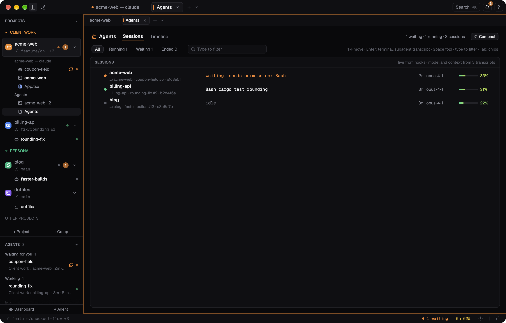
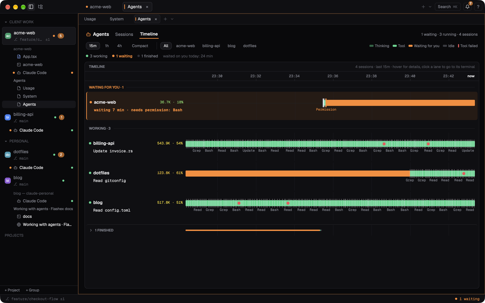
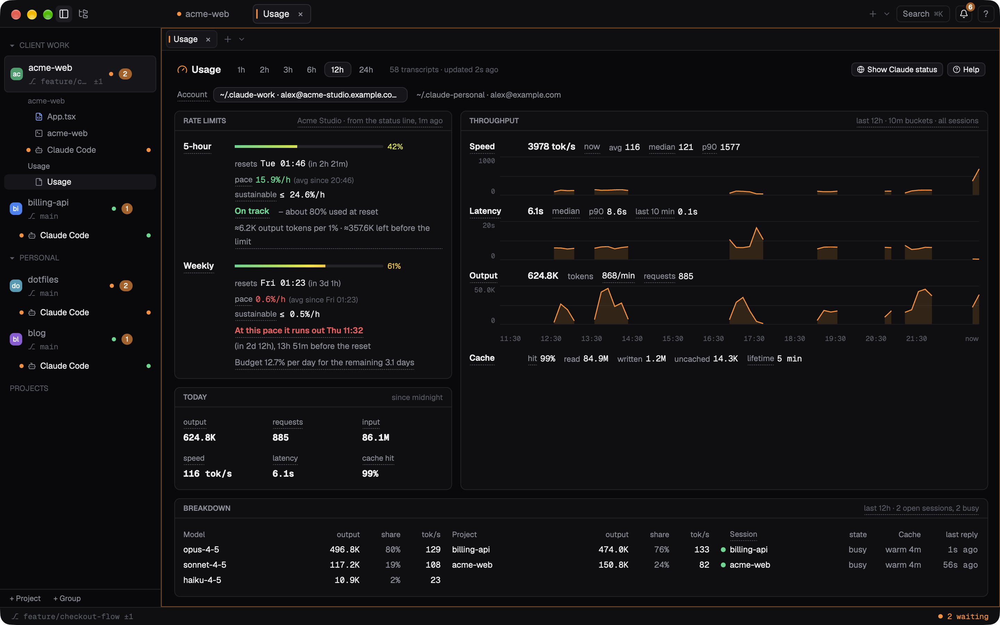
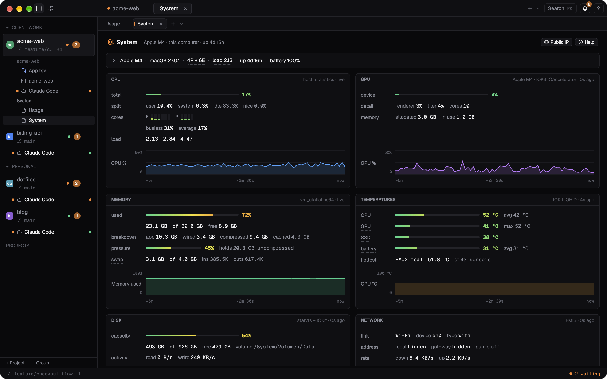
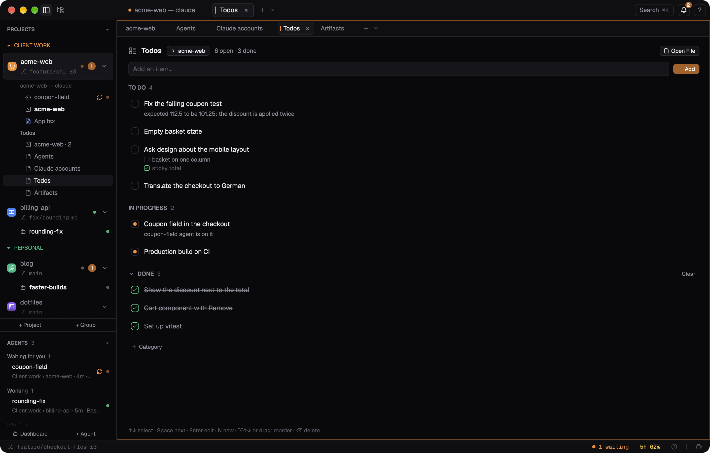
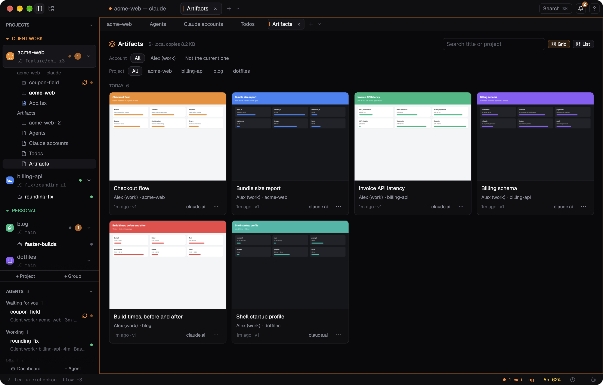

Dashboards
The dashboards open from the command palette as tabs of the current pane: Agents, Usage, System and Claude Accounts, and beside them Todos, Sync and Artifacts. They can be split, moved and closed like any pane, and come back after a restart.
Open them with ⌘K › Agents Dashboard, Usage Dashboard, System Dashboard or Claude Accounts (the accounts, their limits and Switch: Switching Claude accounts). None has a default shortcut; bind agents_dashboard, usage_dashboard, system_dashboard or accounts_dashboard in keybindings.toml. Agents, Usage and System have Compact | Full in their header: Compact is a card per subject with a line per reading (its name, a small chart, its value), in one to three columns as the pane is wide, so a narrow pane beside your terminals works as a column of widgets. Words with a dashed underline explain themselves when you point at them. ⌘= and ⌘- in a dashboard make its text, rows and charts bigger or smaller, 10 % at a time from 80 % to 160 % (⌃⌘0 puts it back); the cards then fill fewer or more columns. Every dashboard starts from [dashboards] text_scale (Settings › Appearance › Dashboard text size).
Agents
Every agent session in the window (Claude Code and the other connected agents): its project, folder and terminal, whether it is waiting for you, running, idle or ended, what it is doing right now ("Bash cargo test", "waiting: needs permission: Bash"), for how long, its model and how full its context is. Each session's subagents are listed under it with their task, tool, model and context.

- Sessions lists them in sections: Waiting for you first, then Working and Idle (the one that finished last first); ended sessions fold into Recently ended. Each session is two lines: its name, where it runs and for how long, then what it does, with its model and context. One waiting for a permission says for what ("needs permission: Bash · git push"), and one whose tools failed in the last 15 minutes carries a red "2 failed". Filter with the chips (they carry the counts; Tab switches) or just type; ↑ ↓ and Return (or a click) jump to a session's terminal, Space folds its subagents. The selected session offers Reload, Interrupt (sends Esc to its terminal after asking), Copy ID and Transcript (the conversation, read-only). In a narrow or zoomed pane the less important parts leave first (the context's bar, the model, the folder), never what the session does.
- Timeline shows what the sessions did over the last 15 minutes, hour or 4 hours: one lane per session, coloured stretches for thinking, running a tool, waiting for you and idle, and marks for prompts, tools, permission questions and failed tools. Point at a lane to read what happened at that moment; click it to go to that session's terminal.
The Timeline

- Groups. Lanes are grouped under Waiting for you · 2 and Working · 3 headers, waiting first. Idle and ended sessions fold into one "▸ N finished" row, and a session's subagents into "▸ N subagents" under it; a click unfolds them.
- Lanes. Each lane shows its project or terminal and, on a second line, what it is doing or how long it has waited. With only a few sessions the lanes grow to fill the card; with many they keep a minimum height and scroll inside the card. The time axis stays in place while they scroll.
- Tool labels. Under the bar each tool call is named in a word (
Bash,Edit,Read), a failed one in red and a permission question in the accent colour, wherever there is room; when calls crowd together, the newest keep their names. - Details. Pointing at a lane shows what happened at that moment under that lane, so it never covers the lane you are reading.
- Now and time. A line marks now across the lanes, and a lane still going on ends in a dot coloured by what it does. Scroll sideways over the lanes (two fingers, or Shift and the wheel) or press ← → to move the window back in time, up to the four hours that are kept; Back to now › or Esc returns.
- Chips. 15m 1h 4h choose the window (or Tab), and Compact brings back denser lanes without tool names. Project chips filter the timeline to one project. The window, Compact, the project and the finished fold are remembered across restarts.
It reads only Claude Code's hook events and, while it is on screen, the model and token counts from the session transcripts. If the hooks are not installed, it offers to install them (see Claude Code hooks).
Usage
Your Claude Code usage across every session on this computer. When other agents were used in the last 7 days, Agent chips at the top switch to Codex (with its 5-hour and weekly limits), Grok Build, Gemini CLI, Copilot CLI (the output of its answers only: it writes no more), OpenCode (sessions run in Flashex) or pi, read from their own files. The status bar's meter and the limit notice stay Claude Code's.

- Rate limits: the 5-hour and weekly limits, how much is used and when each resets, your pace against the one that would last until the reset, and a forecast ("On track", "Tight", or when it runs out). They come from Claude Code's status line; if they are unknown, Set up in Settings… takes you to the status line row.
- Throughput: tokens per second, latency and output tokens as charts over 1 to 24 hours.
- Today: requests, tokens and how much input came from the prompt cache.
- Breakdown: output and speed per model and per project, and the open sessions with their prompt cache.
Keys: w changes the window, r (or Refresh) reads the transcripts again, h opens the Help card that explains every number. With several Claude accounts, chips at the top pick the one shown. Optional and off by default: Show Claude status (incidents from status.claude.com, claude_status) and the usage API fallback (u asks it at once). The dashboard reads only while it is on screen and keeps a small summary so it opens fast; no message text is kept.
System
What this computer is doing, without administrator rights:

[privacy] hide_host on, the computer's name and addresses are hidden.- a strip with the chip, macOS, cores, load, uptime and battery; its chevron opens the details (
system_details); - CPU (total, user and system, every core by cluster), GPU, Memory (used, app, wired, compressed, cached, pressure, swap), Temperatures (CPU, GPU, SSD, battery), Disk (space, reads and writes, when it fills up), Network (addresses, download and upload, interfaces, the busiest processes) and Processes by CPU and by memory (
system_processespicks the table of a narrow card).
Charts show the last five minutes; point at one to read a value. r reads everything now and h explains every number and where it comes from. The cards fill one to eight columns as the pane allows; drag CPU, Memory, GPU, Temperatures or Disk by its grip (⠿) onto another to take its place (Compact and Full share one order, and Compact's × hides a card). On Windows the temperatures are the ACPI thermal zones and each GPU's and drive's; where Windows gives no CPU temperature the chart draws the hottest sensor, titled Hottest °C. Charts keep sampling while the dashboard is open behind another tab, and for ten minutes after you close it. Public IP in the header (off by default, public_ip) shows the address the internet sees.
Todos
⌘K › Open Todos opens the project's todo list as a tab of the current pane: items in categories, To do and Done unless you set your own in Settings › Session › Todo categories ([todos] categories; the last one is for what is done). Every project has its own list, named after it, and there is an Inbox for everything else; the button beside the title switches between them. The first time, a short note on top says what the lists are; Got it closes it for good. An empty list shows its categories and one line on how to add the first item.

- Type in the field on top and press Enter to add an item; the field keeps the keyboard for the next one.
- A click on an item's box, or Space, moves it to the next category (from the last one back to the first). The selected item shows the other categories, Edit and Delete; 1 to 9 move it to that category.
- ↑ and ↓ select (a long list scrolls to the selected item), Enter or a double click edits the text, ⌫ deletes, N goes to the field.
- Drag an item to put it elsewhere: onto another item (it goes before it), onto a category's name (its first item) or just under a category's last item (its last). ⌥↑ and ⌥↓ move the selected item one place within its category (on Windows and Linux Ctrl+↑ and Ctrl+↓: Alt with an arrow goes between panes there). The order is the file's.
- Lines under an item in the file (a note, indented sub-points,
- [ ]and- [x]boxes) are shown under it, smaller. They are edited in the file (Open File) and stay with the item wherever it goes. - The last category folds away with a click on its name; Clear deletes everything in it after a second click.
- Categories: a double click on a category's name renames it, Category under the list adds one (before the last, which stays the one for what is done), and an empty category that is not the last has Delete.
The list picked in the header and the folded last category are the pane's own and come back after a restart. When a project is renamed, its list goes with it; if the new name has a list already, both stay and the old one can still be picked in the header.
A list is a Markdown file on this device, in todos in Flashex's data folder (~/Library/Application Support/flashex/todos/ on macOS): ## Category headings and items as - [ ] text <!-- id:k3x9q2bd -->. Open File opens it in the editor. You and your agents can edit it, by hand or with flashex todo, also while Flashex is closed; an open window shows the change within seconds. An item typed without an id gets one, and an id never changes. A list keeps the categories its file names; the setting is for new lists. When a list's categories are not the ones in Settings, the window offers Use the categories from Settings: items stay in the category of their name, those of a category that is not in Settings go to the first one (asked once more before anything moves).
With Sync set up, the header says how it stands: a dot (green in sync, orange offline, red for an error) and, in a pane wide enough, the words (synced 2 min ago, offline · last sync 3 min ago); a narrow pane shows the dot alone, with the words in its tooltip. The count of open and done items always keeps its room. A click opens the Sync window. When the duplicate cleanup is on and finds two items that look like one task, a bar under the field offers Merge (the newer one goes, its notes move under the other) or Keep both.
Sync between your computers
⌘K › Sync… opens the Sync window. It keeps the same todo lists on every computer of yours (Macs and Windows PCs; below "Mac" stands for either): add an item on one and it shows on the other, finish it anywhere and it is finished everywhere. One Mac is the main one and the others sync with it, over your Tailscale tailnet, through the same server and the same kind of pairing Phone Access uses.
The first time the window opens with a short introduction: what Sync does, which Mac to make the main one (the one that is on most of the time), whether Phone Access is on here (with a button to its card when it is not) and the three steps of a pairing. Got it closes it for good; How it works in the header shows it again.
Pairing. On the main Mac, Phone Access must be on and set up with Tailscale (its address is https://<name>.<tailnet>.ts.net:8443); while it is off, the window says so in place of Show Code, with a button to the Phone Access card. There, press Show Code in the Sync window: a code like 7K2M-9QXA-B3TD, valid for five minutes, and under it this Mac's address on a line of its own with Copy. On the other Mac open the Sync window, press Enter Code, and type the main Mac's address and the code. The address may be typed without https:// (it is taken as https, on port 8443 when you type none; only localhost and a bare IP address are taken as http); the code with or without its dashes, in either case. What is missing or mistyped is said under its field. The main Mac then asks whether to allow it and both screens show the same short check code; press Allow. Each Mac has its own key: the main one remembers the other's public key, the other remembers the main one's address and key fingerprint, and from then on every connection is proved with a signature. Remove on either side ends it; the lists stay where they are.
When it syncs. The other Macs sync when Flashex starts, a few seconds after a list changed, every 45 seconds, and on Sync Now. When the main Mac cannot be reached (asleep, off the tailnet) the window says offline with when the last sync that worked was (last sync 3 min ago), and it is tried again later; you go on working on both, and nothing is lost.
How two copies become one. Lists are merged item by item, by the id every item has, against what both Macs had after their last sync:
- an item added on one Mac is added on the other; a list made on one appears on the other;
- an item deleted on one Mac and left alone on the other is deleted; one deleted here and changed there stays, as changed;
- a move to another category, a new text and the lines under an item (notes, sub-points) are each taken from the Mac that changed them, so a move on one and an edit on the other both hold;
- when both Macs changed the same thing differently, the later change wins;
- the same new item typed on both (letter case and spaces aside) becomes one item;
- your order is kept, what comes from the other Mac goes to the end of its category; categories are both Macs', the last one stays the one for what is done.
The Markdown files stay as plain as before: when an item changed is kept beside them, not in them.
The window shows this Mac's name and whether it is the main one or which Mac it syncs with, the paired Macs with when each last synced, pairing, what syncs (Todos; [sync] todos) and the duplicate cleanup.
Duplicate cleanup (off by default; [sync] dedupe): after a sync brought new items, a command is shown them with the list's other open items and names the pairs that are the same task in different words. Claude runs claude -p --model opus; Own command runs yours (the question on its standard input, {"pairs":[["id1","id2"]]} on its output): type it in the field under the chips, Enter or a click elsewhere keeps it; a kept command deleted there turns the cleanup off, and a field left empty changes nothing. It runs in the background on a small batch, at most four times an hour, and only suggests: the Todos window asks, nothing is merged by itself.
The other Macs reach the main one's https address with openssl, which macOS has ([sync] tunnel names another program). A Windows computer uses Windows' own TLS, so it needs no program for it; the certificate and its name are checked by Windows. flashex sync status and flashex sync now do the same from a terminal.
Artifacts
⌘K › Artifacts (or Artifacts (N) › at the bottom of the Agents dashboard and in Claude Accounts) lists every page Claude published, newest first under Today, This week, This month and Older, each with a picture of its local copy (on Windows a page is drawn by WebView2 and a PNG, JPEG or GIF is its own picture; other kinds show their icon). A wide pane shows a grid of tiles, a narrow one a list; Grid and List choose, and the choice is kept with the pane across a restart.

- Search by title or project; filter by account, by project and, with several Claude Code folders, by folder. A long row of chips shows its first ones and the chosen one, the rest behind N more ▾.
- A click opens the local copy in a browser pane (its tab and the status bar say the artifact's title), ⌘-click or claude.ai the original.
- ⋯ copies the link, opens either, forgets the artifact (pressed twice), and with several versions kept, Versions lists them with their time and size; a click on one opens that version's copy. In a list its actions are under the row, on as many lines as the pane's width asks for.
An artifact is readable and updatable on claude.ai only from the account that published it; one owned by another account than the one in use shows that account in the warning colour, and its local copy opens all the same. Copies are kept within limits: each artifact's latest version, five older ones of the last 90 days, 500 MB in all. To keep pages on this computer only, Settings › AI › Claude's artifacts › Local only ([agents] artifacts = "local"): Flashex stops the publishing and tells Claude where the page is kept. Agents list them with flashex artifacts.
The artifacts are collected by Flashex's Claude Code hooks, which note every page Claude publishes and keep its local copy. The first time, a note on top says so and how the hooks stand; when they are not installed, its button opens Settings › AI agents, where they are. Got it closes it for good.
One artifact is one line: the same file published again from the same Claude Code folder updates it, also under a new link (the line then has the newest link; Versions says which earlier link a version went out under). A content published before is not kept twice.
⌘= and ⌘- zoom a dashboard pane: its text, buttons, fields and tiles together.